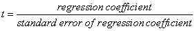

Statistical Summary Table
The standard error, t and P values are approximations computed at the final iteration of the regression.
Estimate. The value for the constant and coefficients of the independent variables for the regression model are listed.
Standard Error. The asymptotic standard errors measure the uncertainties in the estimates of the regression coefficients (analogous to the standard error of the mean). The true regression coefficients of the underlying population are generally within about two standard errors of the predicted coefficients. Large standard errors may indicate multicollinearity. The default procedure for computing standard errors is based on whether or not the regression problem is weighted. In an unweighted problem, the standard error for each parameter includes a factor that estimates the standard deviation of the observed data. In this case, it is assumed that the errors for all data points have the same variance.
In a weighted problem, there are two options for computing standard errors. One option includes the factor that estimates the standard deviation of the observed data. This option is called reduced chi-square. The other option omits this factor in the computation. To select the option for standard errors, go to the Equation Options dialog box.

You can conclude from large t values that the independent variable can be used to predict the dependent variable (for example., that the coefficient is not zero).
P value. P is the P value calculated for t. The P value is the probability of being wrong in concluding that the coefficient is not zero (for example, the probability of falsely rejecting the null hypothesis, or committing a Type I error, based on t). The smaller the P value, the greater the probability that the coefficient is not zero.
Traditionally, you can conclude that the independent variable can be used to predict the dependent variable when P < 0.05.